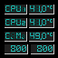
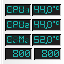

|
wmc2dAboutwmc2d is a dockapp to monitor the core 2 duo temperature and frequency.License AGPLv3: GNU Affero General Public License version 3 NewsWed May 12 14:03:21 CEST 2010Version 2.02 released.Found some old cleanups unreleased. Better redraw of content. Thu Apr 30 10:12:25 CEST 2009Version 2.01 released.Removed shared pixmaps, not needed for wmc2d, but wmc2d didn't worked, where shared pixmap aren't available. Thu Apr 30 00:27:28 CEST 2009Version 2.0 released.Screenshots Downloads Source Version 2.02 (GIT-2305b28)wmc2d-2010-05-12-14.tar.bz2 Source Version 2.01 (GIT-d8a73b0)
Source Version 2.00 (GIT-5604023)
Johns johns98 @ gmx . net Development hosted on: |